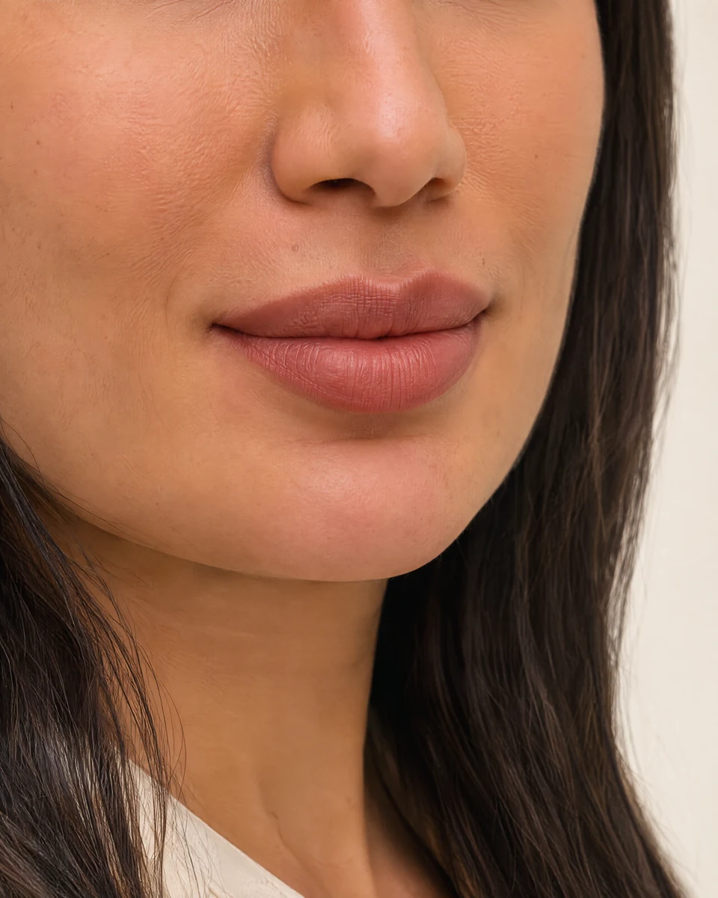
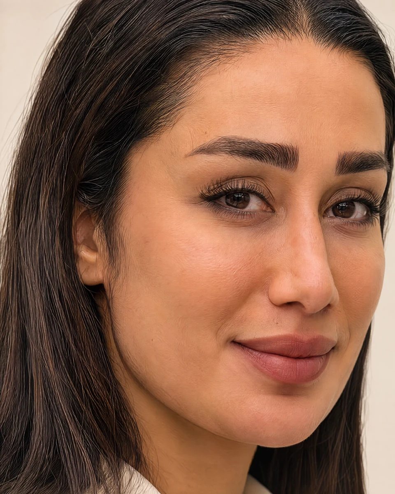
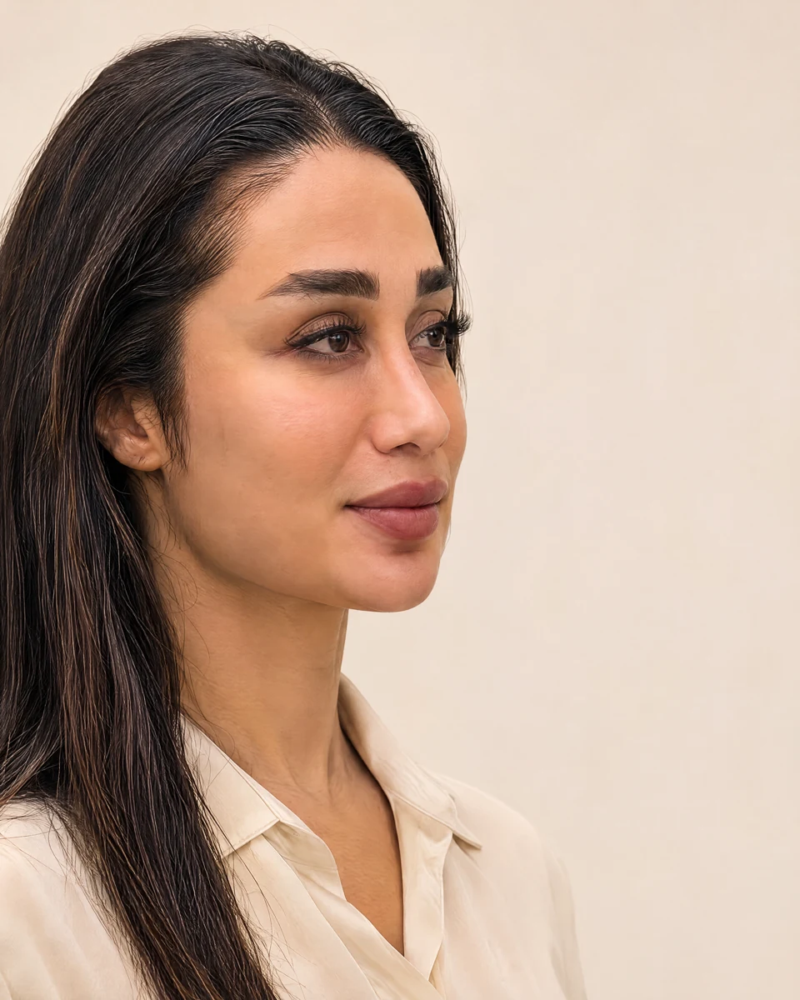
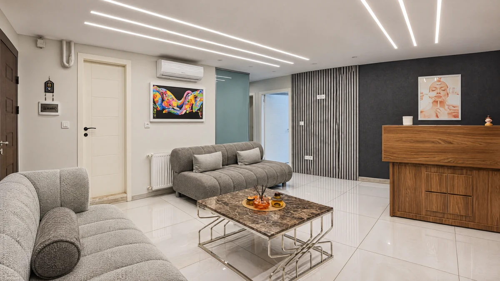
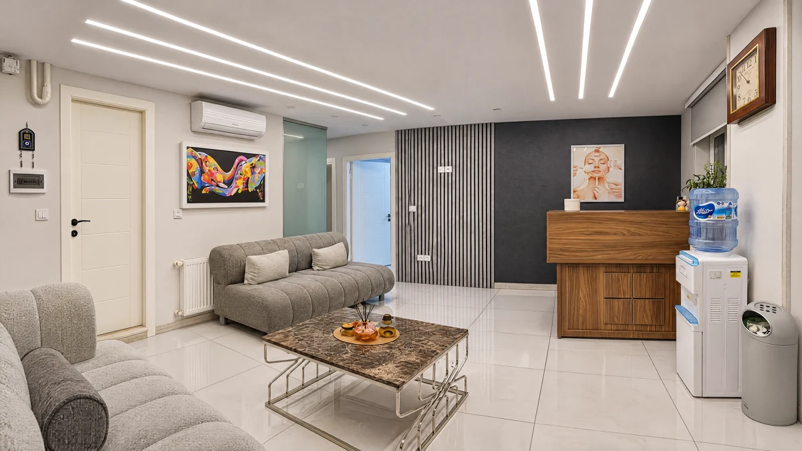

LIPS
نگاه ما 01
هر چهره امضای خودش را دارد. ما آن را تغییر نمیدهیم؛ فقط روشنترش میکنیم.
زیبایی در جزئیات 02
کمتر.
کمتر.
اما دقیقتر.
سه جزئیات، یک تعادل.

SKIN & EYES
PROFILE
فضایی آرام،
برای یک گفتوگوی واقعی.
— Karaj clinicمجموعه خدمات 03از یک جزئیات
از یک جزئیات
شروع کنید.
چهار مسیر. هرکدام صفحه خودش را دارد.



پشت هر انتخاب 04
اول شما.
اول شما.
بعد، مسیر.
هر مسیر با یک گفتوگو شروع میشود؛ با شنیدن خواستهی شما.
قدمبهقدم 05
ساده. شفاف.
i
گفتوگو
خواستهها و پرسشهای شما.
ii
ارزیابی
بررسی فردی چهره و شرایط.
iii
انتخاب
تصمیم آگاهانه، بدون عجله.
ویدیو بلاگ 06ببینید.
همه ویدیوها